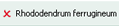
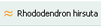
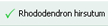

So geben Sie einen Namen ein und testen, ob der Name richtig ist und Sie somit das Taxon erkannt haben:
Klicken Sie in das Eingabefeld für das Taxon unterhalb der Symbolleiste.
Geben Sie den Namen ein.
Bestätigen Sie die Eingabe mit RETURN.
Beachten Sie, dass der Name der verlangten taxonomischen Stufe entspricht. Der eingegebene Name erscheint rechts neben dem Eingabefeld mit einer Bewertung. Für die Bewertung werden Symbole verwendet, die wie folgt, hier am Beispiel von Rhododendron hirsutum, erläutert werden:
Tabelle 1.

|
Dieser Name ist nicht richtig. |

|
Dieser Name ist beinahe richtig, er enthält aber einen Tippfehler oder die Endung stimmt nicht. Sie bekommen einen entsprechenden Hinweis. Geben Sie den Namen danach richtig ein. |

|
Der Name ist richtig. |
Sobald der Name richtig eingegeben worden ist, wird das Eingabefeld gesperrt.